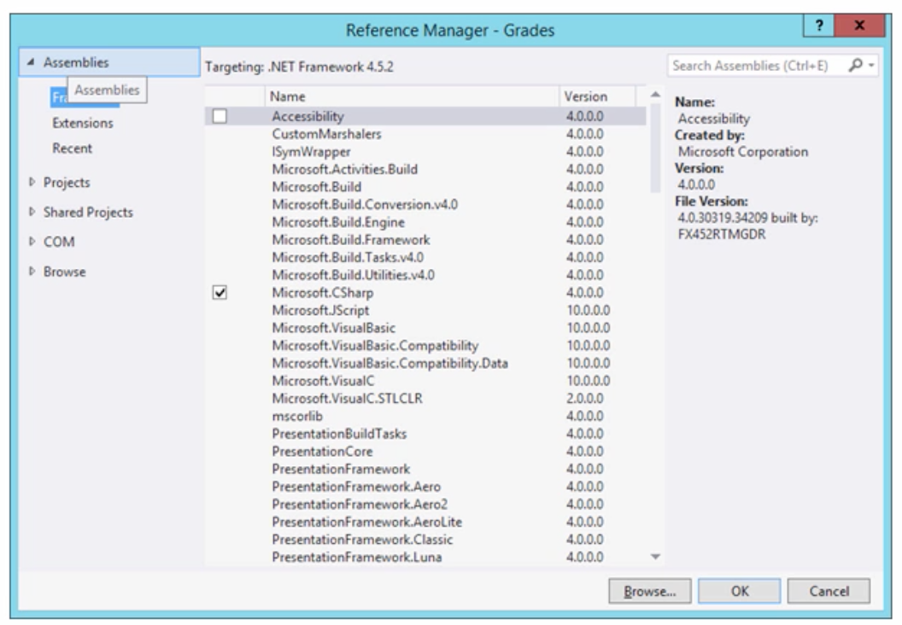
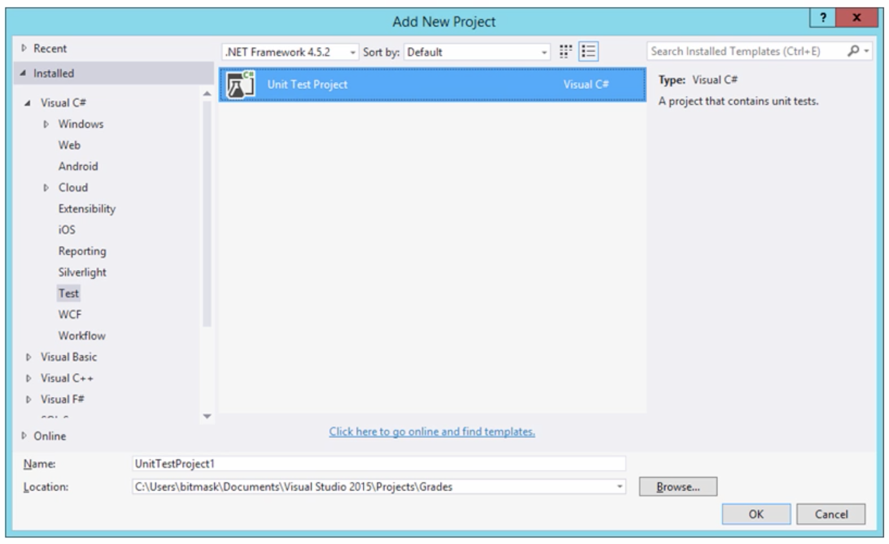
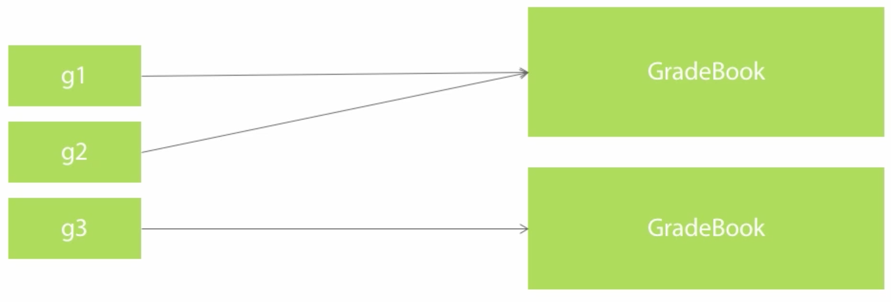
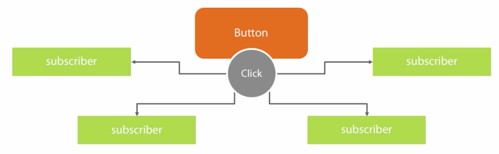
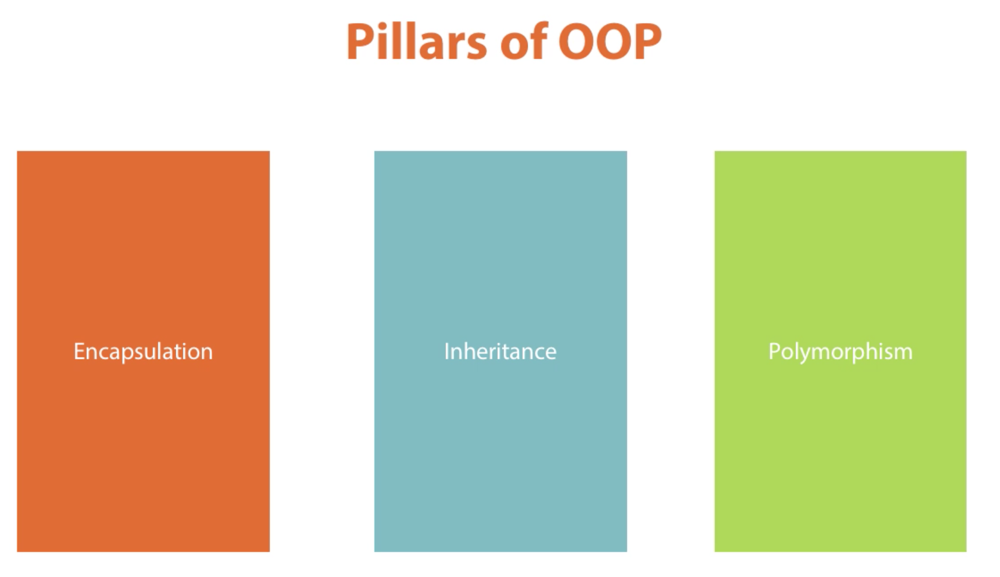

The .NET framework divided into the Common Language Runtime (CLR) and Framework Class Library (FCL).
Common Language Runtime – CLR
- The CLR managed your application
- Provides memory management
- Operating system and hardware independence
- Language independence
- Framework Class Library – FCL
- A library of functionality to build applications
- ESP.NET is one area of FCL
C#
- One of the many langues for .NET
- Syntax is similar to Java, C++, and JavaScript
// The method called main
public static void Main(){
// The date time class is part of the framework class library
if(DateTime.Now.DayOfWeek == DayOfWeek.Monday){
Console.WriteLine("Another case of the Mondays!");
}
}
csc.exe
- The C# command line compiler
- Takes your code and translate into instructions that your CPU will understand → executable

Documents\…\program.exe argument1 argument2One can also set the default arguments in the project properties.
using System;
namespace Hello{
class Program{
static void Main(String[] args){
Console.WriteLine("Hello " + args[0]);
}
}
}
Summary
- C# is a strongly typed & case sensitive language for .NET
- Vidual Studio is an IDE to work with C# applications of all types
using System;
namespace Hello{
class Program{
static void Main(String[] args){
Console.WriteLine("Your name: ");
string name = Console.ReadLine();
Console.WriteLine("How many hours of sleep did you get last night?");
int hoursOfSleep = int.Parse(Console.ReadLine());
Console.WriteLine("Hello " + name);
if(hoursOfSleep > 8){
Console.WriteLine("You are well rested");
} else{
Console.WriteLine("You need more sleep");
}
}
}
}
Classes and Objects
Class member definitions:
- State ← Member vairables
- Behavior ← Member functions
Reference Types
- Classes are references types
- Variables hold a pointer value
using System;
namespace Grades{
class Program{
static void Main(string[] args){
GradeBook book = new GradeBook();
book.AddGrade(91);
book.AddGrade(89.5f);
// Pointer to a gradebook object
GradeBook book2 = book;
book2.AddGrade(75);
}
}
}
Access Modifiers
public – Everywhere
private – Only in the same class
internal – Only in the same assembly
class GradeBook{
// Public constructor
public GradeBook(){
grades = new List<float>();
}
// Public member variable
public void AddGrade(float grade){
grades.Add(grade);
}
// Private member variable
private List<float> grades;
}
Static
- We can use or call static members of a class without creating an instance
public static float MinimumGrade = 0;public static float MaximumGrade = 100;This is how the
Console.WriteLine(“Hello!”); works, we don’t declare a console object, we simply call it.Assemblies
- Assemblies are .exe or .dll files
- Contain metadata about all types
- Other programs can use .dll files ← Great for re-using the code
- Global Assembly Cache
- A central location to store assemblies for a machine
- Assemblies encapsulate C# programs and classes
- One could think of assemblies as libraries that contain methods and all types of functions
References
- Must load assembly into memory before using types inside
- Easy approach – Reference the assembly in Visual Studio
- This is of course if you need to use a class and the assemblie is not included in your program

Unit Testing
- Write code to test code!

namespace Grades.Tests{
[TestClass]
public class GradeBookTests{
[TestMethod]
public void ComputerHighestGrade(){
GradeBook book = new GradeBook();
book.AddGrade(10);
book.AddGrade(90);
GradeStatistics result = book.ComputeStatistics();
Assert.AreEqual(90, result.HighestGrade);
}
}
}
Types
Reference Types
- Vairables store a reference to an object
- Multiple variables can to the same object

Value Types
- Variables hold the value
- No pointers, no references
- Many built-in primitives are value types
- int
- double
- float
Creating Value Types
- struct definitions create value types
public struct DateTime
{
//...
}
Enumerations
- An enum creates a value type
- Underlying data type is int by default
if(employee.Role == PayrollType.Hourly){ //…}public enum PayrollType
{
Contractor = 1,
Salaried,
Executive,
Hourly
}
Method Parameters
- Parameters by value
- References types pass a copy of the reference
- Value types pass of copy of the value
[TestMethod]
public void ValyeTypesPassByValue(){
int x = 46;
IncrementNumber(x);
Assert.AreEqual(46, x);
}
private void IncrementNumber(int number){
number += 1;
}
The changes remain within the scope of the IncrementNumber function; therefore, the test would not pass.
The whole concept is that when passing a reference, one can make changes when passed to a function; however, when passing by value, the changes are not kept, thus the original value remains the same.
Immutability
- Value types are usually immutable
[TestMethod]
public void AddDaysToDateTime()
{
DateTime date = new DateTime(2015, 1, 1);
date = date.AddDays(1);
Assert.AreEqual(2, date.Day);
}
[TestMethod]
public void UppercaseString()
{
string name = "scott";
name = name.ToUpper();
Assert.AreEqual("SCOTT", name);
}
Arrays
- Manage a collection of variables
- Important to specify the size of the array
- Fixed size
- One could alternately used
- Always size zero
[TestMethod]
public void UsingArrays()
{
float[] grades = new float[3];
AddGrades(grades);
Assert.AreEqual(89.1f, gradesp[1]);
}
private void AddGrades(float[] grades)
{
grades[1] = 89.1f;
}
Summary
- Every type is a value type or reference type
- Use struct to create a value type
- Use class to create a reference type
- Arrays and strings are reference types
- Strings behave like a value type
Methods, Fields, Events, and Properties
Methods
- Methods define behavior
- Every method has a return type
- void if no value returned
- Every method haas zero or more parameters
- Use params keyworkd to accept a variable number of parameters
- Every method has a signature
- Name of method plus parameter
static void display(params int[] nums)
{
Console.WriteLine(nums[0]);
}
Fields
- Fields are variables of a class
- Can be read-only
public class Animal
{
private readonly string _name;
public Animal(string name)
{
_name = name;
}
}
Properties
- A property can define a get and/ or set accessor
- Often used to expose and control fields
- Auto-implemented properties use a hidden field
public string Name
{
get
{
return _name;
}
set
{
if(!String.IsNullOrEmpty(value))
{
if(_name != value){
NameChanged(_name, value);
}
_name = value;
}
}
}
public string _name;
Events
- Allows a class to send notifications to other classes or objects
- Publisher raises the event
- One or more subscribers process the event

Delegates
- I need a variable that references a method
- A delegate is a type that references methods
public delegate void Writer(string message);Logger logger = new Logger();
Writer writer = new Writer(logger.WriteMessage);
writer("Success!!");
public class Logger
{
public void WriteMessage(String message)
{
Console.WriteLine(message);
}
}
Events
Events are based on and use delegates.
Summary
- Members are used to craft an abstraction
- Fields and properties for state
- Methods for behavior
- Events for notification
Control Flow
Branching
Using if and else statements
if(age <= 2){
ServerMIlk();
} else if(age < 21){
ServeSoda();
} else{
serve drink();
}
Switching
- Restricted to integers, characters, strings, and enums
- Case labels are constants
- Default label is optiona
switch(name){
case "Scott":
ServeSoda();
break;
case "Alex":
ServeMilk();
ServerDrink();
break;
default:
ServeMilk();
break;
}4
Itireating
Method of going through every value in a sequence of variables
int[] ages = {2, 21, 40, 72, 100};
foreach(int value in ages){
Console.WriteLine(value);
}
Jumping
- break
- Breaks the iteration
- continue
- Continues the next iteration
- goto
- Go to the pointed line of code
- return
- Can be used in a void method
- throw
foreach(int age in ages){
if(age == 2){
continue;
}
if(age == 21){
break;
}
}
foreach(int age in ages){
if(age == 2){
goto skip;
}
skip:
Console.WriteLine("Hello!");
}
using System;
class Untitled
{
static void Main(string[] args)
{
int[] n = new int[10];
int v = 0;
for(int i=0; i<10; i++){
n[i] = v;
v++;
}
for (int i = 0; i < 10; i++)
{
Console.WriteLine(n[i] + " ");
if(n[i] == 5){
// Breaks the loop and ends the function
break;
}
}
}
}
Throwing
- Use throw to raise an exception
- Exceptions provide type sage and structured error handling in .NET
if(age == 21)
{
throw new ArgumentException("21 is not a legal value");
}
Handling Exceptions
- Handle exceptions using a try block
- Runtime will search for the closes matching catch statement
try
{
ComputeStatistics();
}
catch(DivideByZeroException ex)
{
Console.WriteLine(ex.Message);
Console.WriteLine(ex.StackTrace);
}
Chaining Catch Blocks
- Place most specific type in the first catch clause
- Catching a System.Exception caches everything
- … except for a few special exceptions
try{
//...
}
catch(DivideByZeroException ex)
{
//...
}
catch(Exception ex)
{
//...
}
Finally
- Finally clauses adds finalization code
- Executes even when control jumps out of scope
Summary
- Flow control statement fall into three categories
- Branching
- Looping
- Jumping
- Exceptions provide structure free handling
- Throw exceptions (built-in or custom)
- Catch exceptions
Object Oriented Programming

Encapsulation – Hiding complex classes in an easy to work approach
Inheritance – Classes inheriting fields and methods of other classes
Polymorphism – Classes behaving differently according to the values being used.
Encapsulation example
public class A
{
private number;
public int getNum(){
return number;
}
}
Inheritance example
public class A
{
public void DoWork()
{
// ... work!
}
}
public class B : A
{
}
public class C : B
{
}
Polymorphism
- Polymorphism == “many shapes”
- One vairable can point to different types of objects
- Objects can behave differently depending on their type
public class A : Object
{
public virtual void DoWork()
{
//...
}
public class B : A
{
public override void DoWork()
{
//optionally call into base...
base.DoWork();
}
}
}
Abstract Classes
- Abstract classes cannot be instantiated
- Can contain abstract members